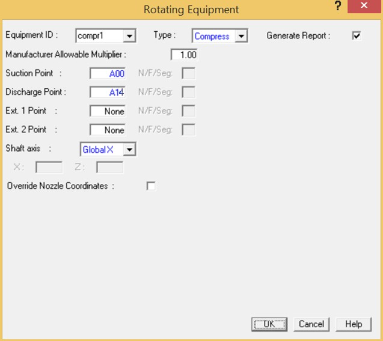
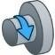
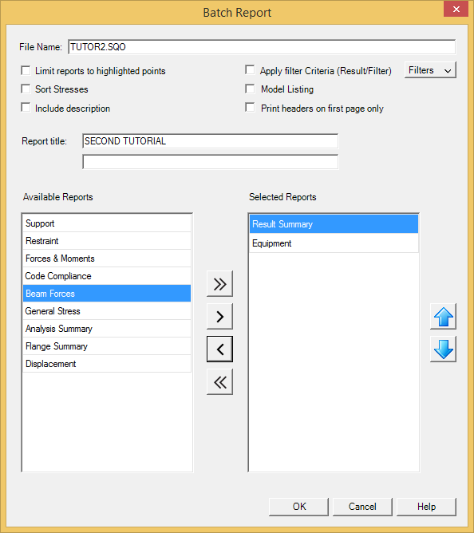

Rotating Equipment Compliance
We will now perform a rotating equipment compliance check for an API 617 compressor attached to inlet point A00 and outlet point A14.
| Note: |
During this exercise AutoPIPE automatically uses the forces and moments at the user- specified points to perform the compliance check. |
  1. Select Result > Rotating Equipment > Insert. The Rotating Equipment dialog is displayed.
- AutoPIPE allows for multiple rotating equipment to be defined including pumps, compressors, turbines, etc. Specify unique equipment ID to identify this element. In the Equipment ID field, input compr1.
- From the Type selection list, choose Compress for an API 617 compressor. After the type is selected, the Rotating Equipment dialog is filtered to provide additional fields related specifically to the equipment type (in this case, a compressor).
- Press Tab to move to the Generate Report field. Keep this field enabled for reporting of this equipment in the generation of a compliance report.
- Define the properties of the compressor by entering the following values in the appropriate fields:
Suction point: A00 Discharge point: A14 Shaft axis: Global X
Override Nozzle Coordinates: Unchecked
- After the dialog appears as shown above, press OK to accept the values and close the dialog
- Now that the rotating equipment is defined, we can review the results of the equipment compliance check. Select Result > Quick Reports > Output Report. When the Batch Report dialog appears, DISABLE the Apply Filter Criteria and Displacement options, and remove the
Displacement report and add the Equipment report. When the dialog appears as shown below, press OK to generate the report.

- The Rotating Equipment report is displayed. This report displays the loads automatically extracted from the analysis and equations required by the API 617 compliance. AutoPIPE’s rotating equipment modules automatically extract the forces and moments from the piping analysis, saving the user from manually inputting loads for each load case. Notice that an asterisk indicates that an API 617 allowable was exceeded.
- After viewing the report results, close the window (File > Exit) to return to the model.